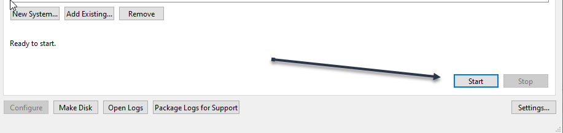

|
<< Click to Display Table of Contents >> Navigation: 3. Quick Start > Launching EmulatR |
Run from your system's profile directory - the directory the launcher created, which holds firmware\, config\, logs\ and the platform manifest. The installation itself is read-only, so never launch with it as the working directory. A genuine cold boot (no snapshot restore), quiet, is:
cd '<your profile directory>'
$env:EMULATR_NO_AUTOLOAD = '1'
& "C:\Program Files\eNVy Systems, Inc\ASA-EmulatR\Emulatr.exe" --firmware firmware\ds20_v7_3.exe --autosnapshot off
Remove-Item Env:\EMULATR_NO_AUTOLOAD
Omit EMULATR_NO_AUTOLOAD to restore the newest snapshot instead of cold-booting. Clear it afterwards as shown - unlike a shell prefix, $env: persists for the rest of the session, so leaving it set makes every later run cold-boot too. Diagnostics go to stderr; see Capturing the run log below.
Autoload to the prompt in seconds -- drop --no-autoload so the newest >>> snapshot is restored:
& "C:\Program Files\eNVy Systems, Inc\ASA-EmulatR\Emulatr.exe" --firmware firmware\ds20_v7_3.exe --autosnapshot off
Bounded headless cold boot -- determinism / step-correctness over a few minutes (covers decompression and early init):
$env:EMULATR_NO_PUTTY = '1'
& "C:\Program Files\eNVy Systems, Inc\ASA-EmulatR\Emulatr.exe" --firmware firmware\ds20_v7_3.exe `
--no-autoload --autosnapshot off --max-cycles 2000000000
Remove-Item Env:\EMULATR_NO_PUTTY
A backtick continues a line in PowerShell; a trailing backslash does not.
Do not use 2> run.log here. Windows PowerShell wraps a native program's stderr in its own error records, so the file ends up holding decorated PowerShell text instead of the emulator's lines. Start-Process writes the stream untouched:
Start-Process -FilePath "C:\Program Files\eNVy Systems, Inc\ASA-EmulatR\Emulatr.exe" `
-ArgumentList '--firmware','firmware\ds20_v7_3.exe','--autosnapshot','off' `
-RedirectStandardError run.log -NoNewWindow -Wait
In Git Bash the plain redirect is fine: ... 2> run.log.
See the Environment Variables reference for the full set of launch gates.
EmulatRLauncher is Supported (Configuring a System with the Launcher)

See Also.
Command Line Options (EmulatR)